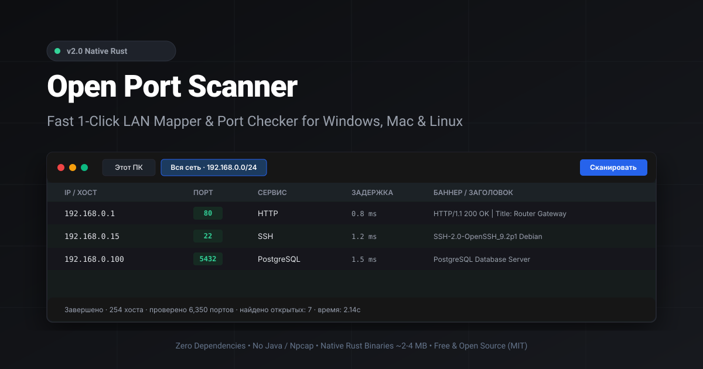

Lightning-fast, zero-dependency async TCP port scanner and 1-click local LAN subnet mapper in native Rust. Scan localhost or all 254 subnet hosts in seconds with a clean GPU desktop GUI and scriptable CLI.

Built with Tokio. Sweeps hundreds of hosts and thousands of ports in parallel without socket exhaustion or high CPU utilization.
Automatically detects your active Wi-Fi or Ethernet /24 subnet while ignoring loopback and virtual VPN TUN ranges (198.18.0.0/15).
Runs natively on Windows (.exe), macOS, and Linux without installing JRE, Python, or kernel packet capture drivers.
Captures SSH greetings, HTTP status codes, Server headers, and HTML page titles with millisecond latency measurement.
Save reports instantly to Downloads/Desktop or copy formatted data to your clipboard for security audit documentation.
Single standalone binary of only ~2–4 MB. Copy to a USB flash drive or deploy across servers without package managers.
Why modern sysadmins replace Angry IP Scanner with Open Port Scanner: zero JRE dependency, instant startup, and native GPU rendering.
Since Famatech Advanced Port Scanner is Windows-only, here is the cross-platform alternative for Apple Silicon, Intel Macs, and Linux.
Step-by-step tutorial on scanning a local /24 subnet for open ports, routers, IP cameras, and database services via GUI and CLI.
# Install via Cargo (crates.io):
cargo install open-port-scanner
# Scan your auto-detected local network (/24 LAN):
port-scanner --lan --profile quick
# Scan specific ports on a host or CIDR and export to JSON:
port-scanner 192.168.1.0/24 -p 22,80,443,3389 -o report.json
# Launch the distraction-free desktop GUI:
port-scanner --gui| Tool | Engine / Runtime | Footprint | Platforms | 1-Click LAN Scan | License |
|---|---|---|---|---|---|
| Open Port Scanner v2.0 | Native Rust (Tokio) | ~2–4 MB | Windows, macOS, Linux | Yes (Auto /24) | MIT (Free) |
| Angry IP Scanner | Java (Requires JRE 8+) | ~20 MB + 150 MB JRE | Windows, macOS, Linux | Manual IP range | GPL v2 |
| Nmap / Zenmap | C++ (Requires Npcap) | ~80 MB + Driver | Windows, macOS, Linux | CLI flags / XML | NPSL |
| Advanced Port Scanner | C++ | ~25 MB installer | Windows only | Yes | Freeware |